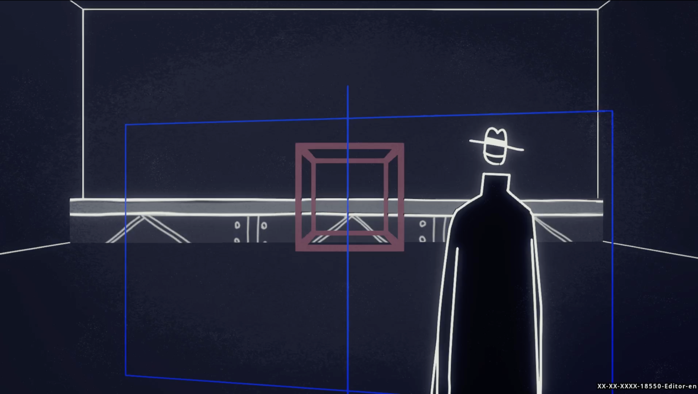
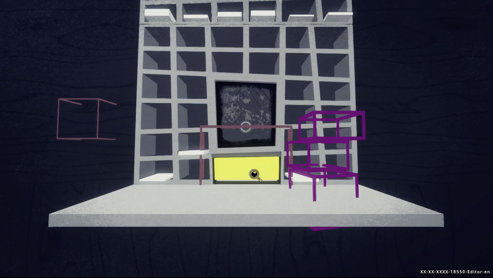
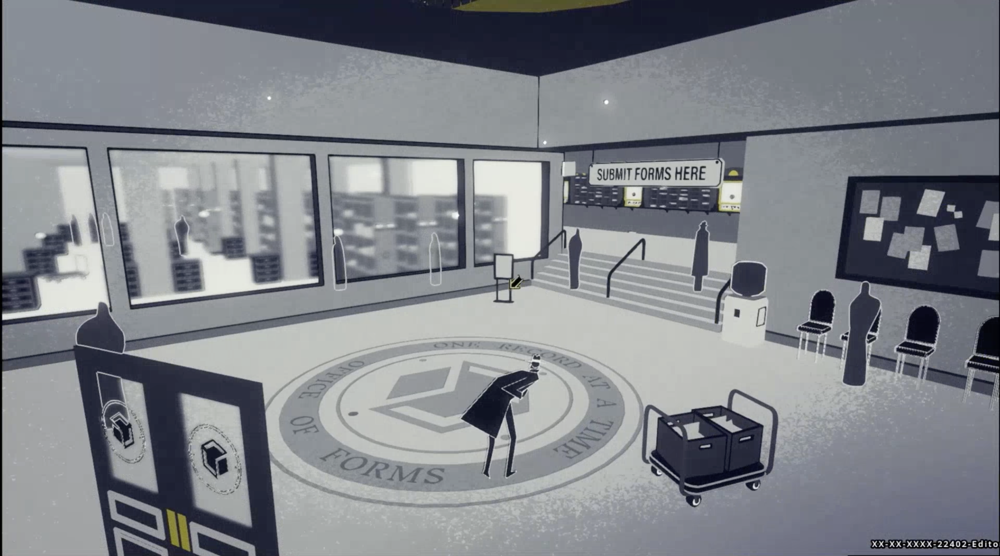
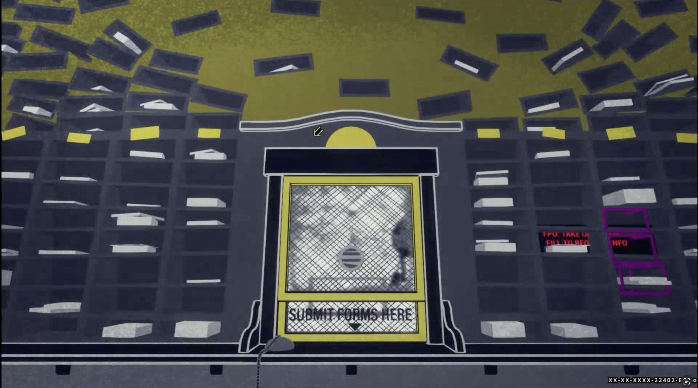
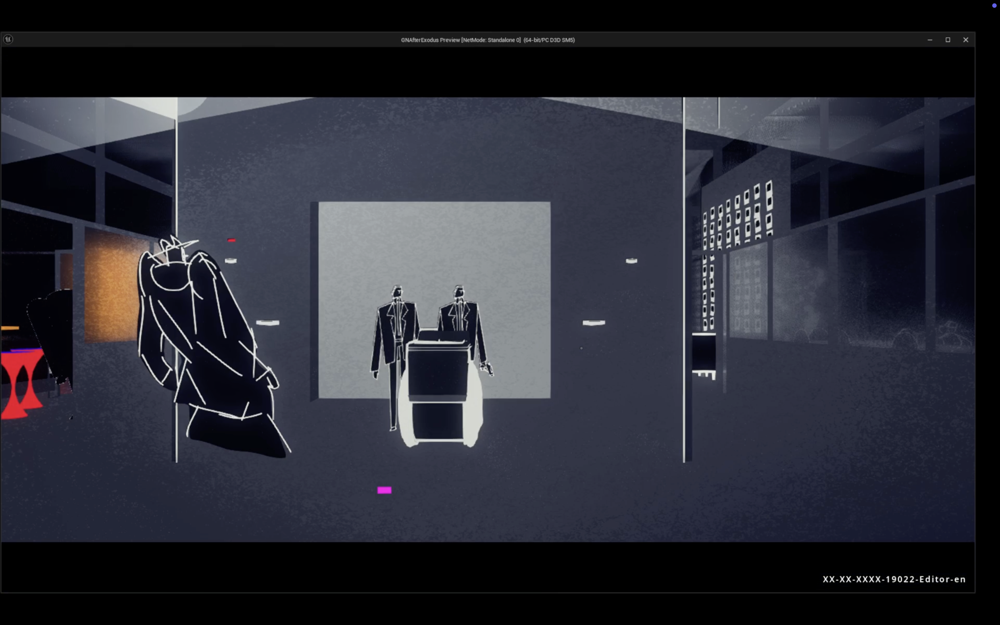
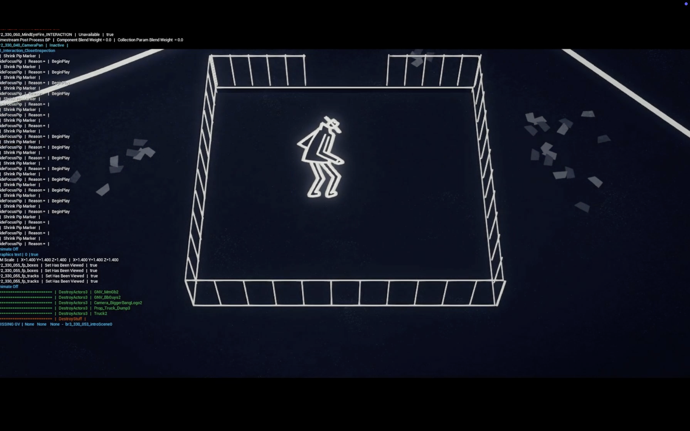
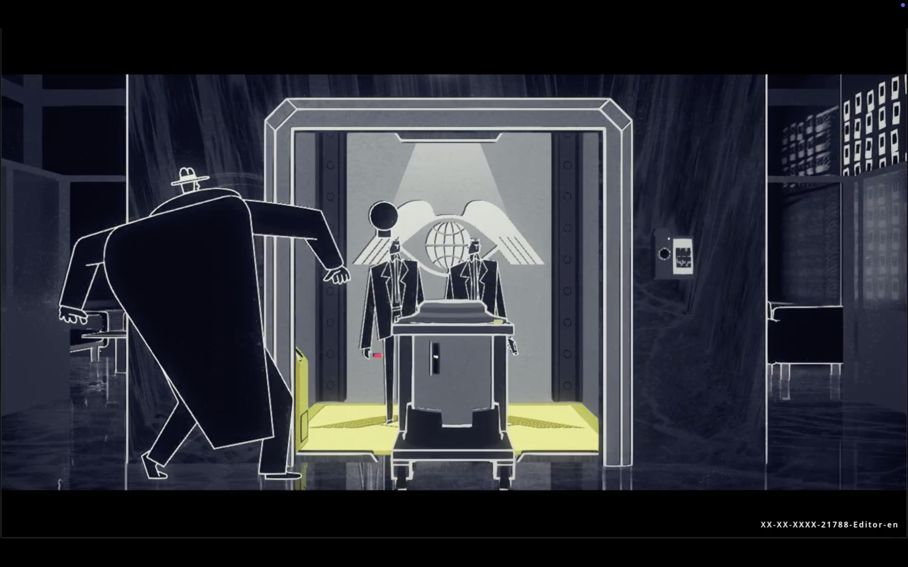
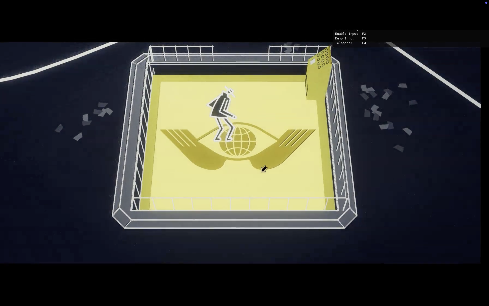

Designing for player exploration
My goal was to translate the dense storyline(s) of the game into rich scenes and make every puzzle and mystery more immersive through the set design. Below are several case studies of levels where I had a significant impact on during production.
Please note the following assets shown are still in production phase...
Case Study 1
Office of Forms
No-Man visits City Hall’s Office of Forms to secure documents for the city’s mobster developers and his clocktower—an errand that pulls him into a detective chase uncovering a larger conspiracy.
Scene 1: Player exits the city hall lobby's elevator into the Office of Forms.
Scene 2: Player finds a clerk window to retrieve their forms, but finds unexpected clues.
Outcome
Before - After
Previously, the level only prototyped with placeholder models and focused on interaction click-boxes. My role was to flesh out the space that precedes the main interaction and complement the story.
Before:

Player enters a blank "office of records"

Players must find appropriate documents at a clerk window
After:

Zoomed out shot of Office of Forms with mini interactions

Players must find appropriate documents at a clerk window
Process
Building an establishing shot
We wanted a very dull space that exaggerated the idea of “documents for everything in the world,” and foreshadowed the interactions later in the level. The scene contains endless repetition of rectangles, shelves, and cubbies, with staircases leading the player to the clerk window interaction.
Early sketches and ideation for what the opening shot into the space would look like – play on “Office of Forms” referring to both official documents and complex geometries.
First blockouts of the space, trying to have a hero asset that defines the office of forms in some large lobby installation.
Adjusted the camera angle and added visual cues to guide players toward the next level.
Redesigned the clerk window setup to enhance legibility and support cinematic framing in later cutscenes.
Case Study 2
Reality Estate Office
This scene introduces one of the big conspiracies of the Black Rapture timeline, which needed an eye-scanner elevator transitioning from this office building lobby into a secret lair.
Scene 1: No-Man is sneaking around the reality office when a mysterious trolley is pushed out of the elevator.
Scene 2: No-Man returns to the office with a glass eye that helps unlock the secret elevator and into their lair.
Outcome
Before - After
I added the missing elevator, eye-scanner, prop models, and refined the layout to ensure the environment could function consistently across different cutscenes.
Before:

Player stumbles across a mysterious trolley from a suspicious elevator.

Player enters the "reality" secret lair.
After:

Both elevator and trolley more heavily armored/relevant to story.

Bigger emphasis on secret lair entrance.
Process
Exaggerating the "reveal"
Based on the cut scenes, the elevator was the first instance No-Man sees the Developers as a front for something more suspicious. I wanted the elevator, and everything relating to it, to reflect that through more high-tech forms and stronger colors.
Initial blockouts for the elevator doors, shaped around reflecting the Developers’ eye logo, leading to a horizontal sliding mechanism.
Early iterations of the elevator focused on more gilded interiors, but then opted for a more industrial platform elevator to complement the overhead shot later in later cutscenes.
Case Study 3
Prop Design
I created various props that were used across multiple levels in both timelines, including furniture, vehicles, and set dressing elements that enhanced the environment, narrative, and/or puzzle mechanics.
Detective Dawn and Dusk pull up to No-Man in Dawn's eccentric sunrise cop car.
A dynamic elevator system in the back of cityhall's lobby.